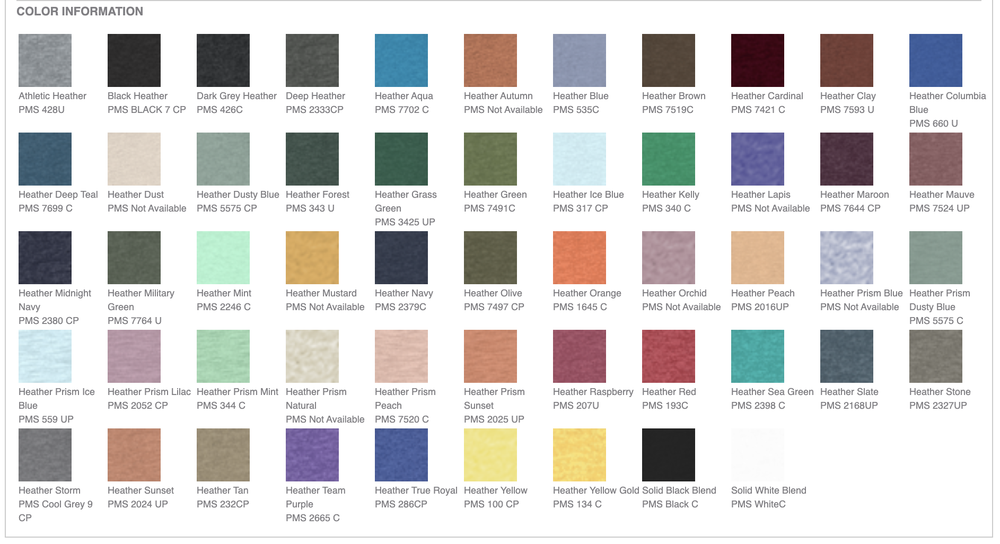
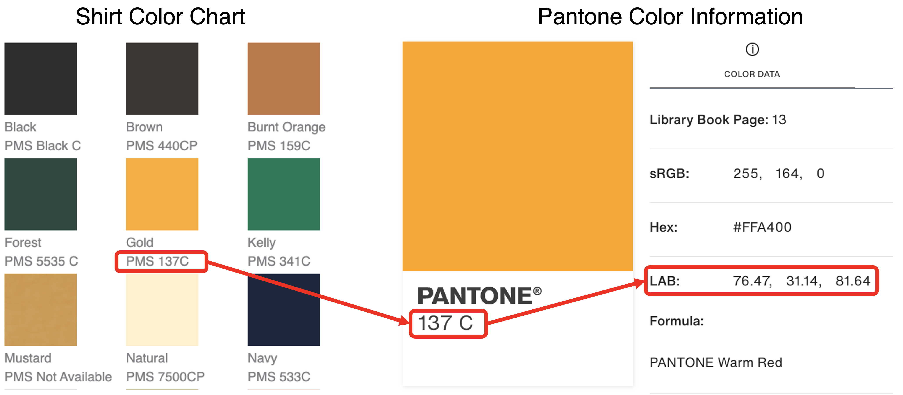
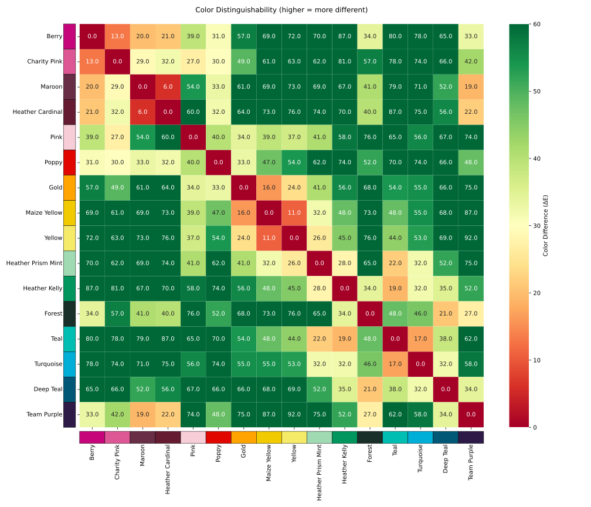
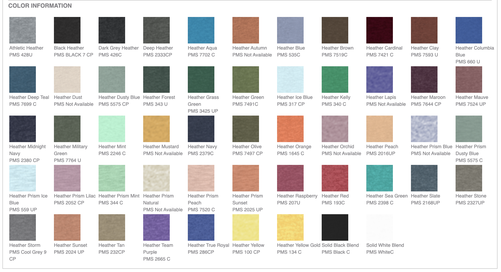
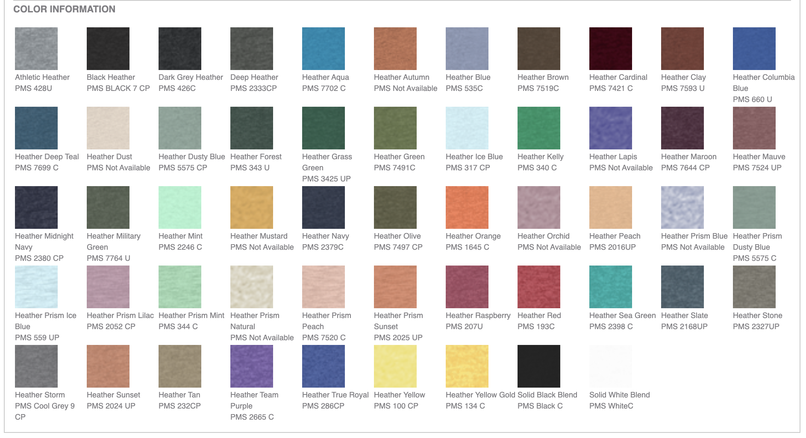

In Part 1 and Part 2 we explored the issues facing the Stonewall Dodgeball league when selecting shirt colors. In Part 1 we found the best way to add additional colors to the league and in Part 2 we explored heuristics for finding the best subset of colors for the league so no two colors are too similar.
Part 3 will expand on part 2, introducing proper optimization methods for color selection. We will begin by showing how to select the best (most diverse) colors for the league and then expand on this by taking into account team preference.
I have decided to keep all code cells hidden for this writeup, but feel free to expand any of the codeblocks on this page (denoted by “> Code”). All the source code can be found on my GitHub.
Code
import numpyimport pandas as pdfrom colormath import color_objects, color_diffimport math# This exists to resolve an issue with the colormath library def patch_asscalar(a):return a.item()setattr(numpy, "asscalar", patch_asscalar)color_df = pd.read_csv("data/all_colors.csv")
Refresher
There are a lot of colors!
The dodgeball league provides 103 unique shirt colors to pick from.
Eagle eyed readers will see that there are 110 colors lsited below, however I have removed a few duplicate colors from the pool.

Code
lab_string =list(color_df["L*a*b Value"])lab_strings = [color_string.split(", ") for color_string in lab_string]lab_floats = [[float(x) for x in row] for row in lab_strings]lab_colors = [color_objects.LabColor(lab_l=lab_color[0], lab_a=lab_color[1], lab_b=lab_color[2]) for lab_color in lab_floats]
Obtaining LAB Values
In order to accurately determine color difference, we will need to obtain the LAB values for each possible shirt color. The LAB color system is best for this analysis because it accurately represents how humans see and differentiate color.

How I got LAB Color Info
LAB color information for most colors can be obtained from the PMS (Pantone Matching System) code beneath the swatch on the color palette. Pantone provides LAB (and other color) information for each color with a PMS code. (For colors without a PMS code, I approximated a LAB value from the display RGB value)
Color Difference
Once we have our LAB values, we can easily compute color difference.
For color difference calculations, will use the CIEDE2000 distance. Color difference is returned as a ∆E value.
Delta E Values and Color-Difference Perceptibility
Delta E (ΔE)
Perceptibility
Description
< 1
Imperceptible
Colors appear identical to most observers
1–2
Very Slight
Only experts notice the difference
2–10
Noticeable
Average person notices on close inspection
10–20
Obvious
Clearly different colors
> 20
Very Distinct
Colors are dramatically different
For shirt color selection, we will use:
ΔE < 5: Risk of confusion, too similar
ΔE 5–10: Acceptable if team choices are prioritized over maximum distinctness
ΔE > 10: Safe choice, easily distinguishable in all conditions
∆E > 20: Ideal choice, very distinct colors
Examples
These two colors are 2 units apart:
Code
from utils import display_color_swatchesdisplay_color_swatches(hex_colors=[color_df.iloc[8]['Hex'], color_df.iloc[55]['Hex']])
Now that we have our colors in a format we can properly analyze, we can return to answer our central question:
What is the best set of shirt colors for the dodgeball league?
In part 2 we covered why this isn’t super easy to compute:
Analyzing the best combinations of 16 colors yeilds 2,245,547,413,628,550,570 possible combinations! (2 quintillion)
Analyzing the best combinations of 24 colors, we must score 178,409,928,551,259,450,861,900 possible combinations! (178 sextillion)
I framed the problem as a a subset of the Maximum Diversity Problem - how can we select the subset of colors that are most distant from each other on average?
In Part 2 we used some heuristics to try an approximate the subset of colors with the highest average distance, these included random searches, greedy algorithms, and generating a convex hull of the LAB color space.
While these are fun approximations (especially the convex hull visual), they pale in comparison to the power of proper optimization methods.
We will use Google’s Operations Research Tools Constraint Programming - SAT Solver to systematically explore solutions to our color diversity problem.
The CP-SAT solver is flexible enough to enable us to explore the original maximum pairwise distance approach as well as other measures such as maximum minimum distance.
Continuing where we left off in part 2, lets find the subset of colors with the greatest pairwise distance. This is the same metric used in the random, greedy, and convex hull approaches.
After letting the model run for 5 minutes, we get the following:
This is a great start! Broadly this palette contains a variety of colors that are quite different. However Charity Pink and Berry are a bit close, so are Maroon and Heather Cardinal as well as Gold and Maize Yellow.
Lets make a heatmap showing how similar/different the colors are and take a closer look:

Heatmap Showing Pairwise Distances Between Colors
Interesting. Generally the colors are quite distinct, however along x = -1 some of our colors are almost unacceptably close.
Maroon and Heather Cardinal are only 6 ∆E units apart, and there are quite a few pairs that are ~10 ∆E units away from each other.
We also see that the solver status is FEASIBLE. Meaning we found a solution but we don’t know if it is the best.
To solve this issue, instead of maximizing total diversity, what if we tried to maximize the minimum distance between any two colors?
Maximize the Minimum Distance
We can run a similar optimization to the code above, however we tweak the objective function to maximize the minimum distance between any two points.
Much better! Now the closest colors are 22 ∆E units apart, this is a dramatic increase from ∆6 units from before.
Looking at the solver output, we reached an OPTIMAL solution, this means that the solver found a solution and proved it is the best. In fact, there are 28,654 optimal solutions.
Quite a few ideal palettes to choose from!
Before moving forward, let’s take a moment and compare the results of our different objective functions:
Maxmimize Total Distance
Maximize Total Distance Heatmap
Colors are broadly more distant (plot is greener)
Adjacent colors are very close togther
Solution is FEASIBLE
No optimal solution, billions of feasible solutions
Maximize Minimum Distance
Maximize Minimum Distance Heatmap
Colors are broadly a little more similar (plot is green/yellow)
Adjacent colors are much further apart
Solution is OPTIMAL
28,654 optimal solutions (for 16 colors)
Hybrid Approach - Finding the Best of the Best
Since the solution from the Maximum Minimum approach resulted in a max-min of 22 ∆E units, we can rerun the total distance solver with an additional constraint that all pairs must be at least 22 ∆E units apart.
After running the solver we get the following result:
 
